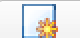
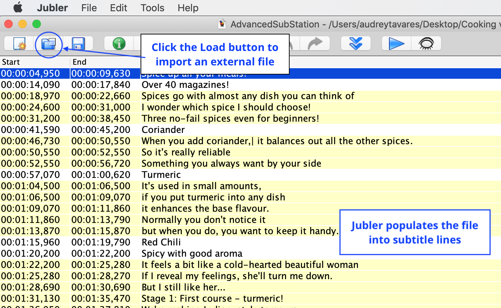
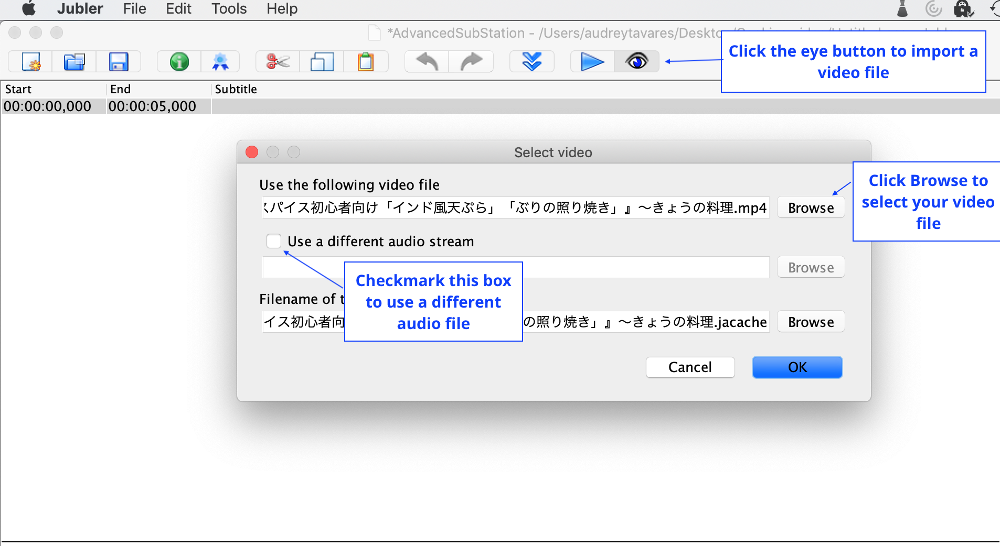
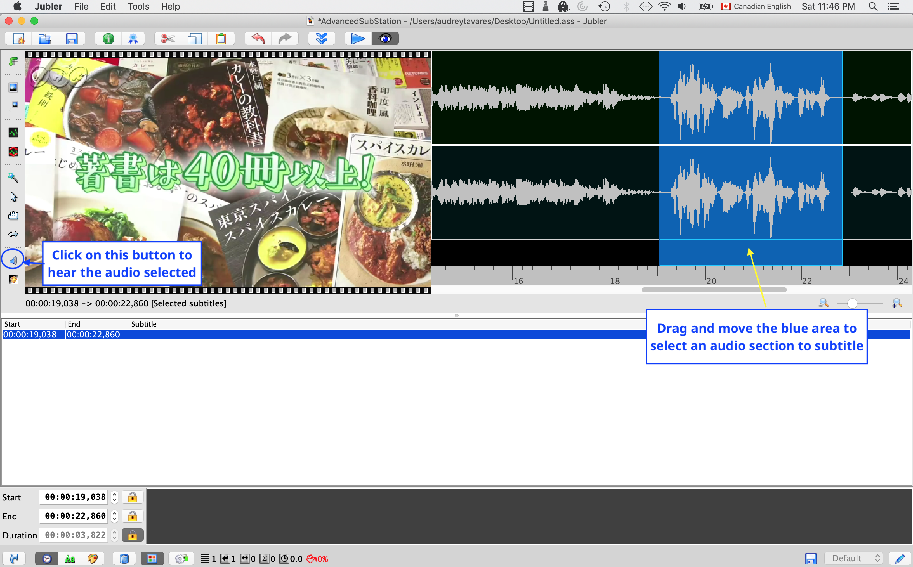

Creating Subtitles
Skill |
Specific Errors |
Remediation |
Development of the Topic |
Additional Recap Questions |
List the same skills identified in the Skill Tree in the order that it would be presented in the actual lessons. |
List the common mistakes and misconceptions learners would have when dealing with the skills. |
Describe how the lessons will help address and remedy the misconceptions. |
This is the precursor to your script. Outline how you would explain the various skills and list questions to accompany the explanation. |
Include additional recap and test questions to reinforce learning. |
Example
Prerequisite Skills: State place value of whole numbers
Acquired Skills: Identify tenths and hundredths place value in a decimal number.
Practiced Skills:
Skill |
Specific Errors |
Remediation |
Development of the Topic |
Additional Recap Questions |
Identify the whole and fractional parts of a decimal number. |
Read the decimal number as two separate whole numbers. |
Return to card with 10x10 grid to emphasize decimal-fraction link. |
Prices are a good representation of decimals. [CONCEPT] What does the dot mean in this number? (Show a price in dollars and cents.) (Multiple choice: It represents two different prices, It separates dollars from cents, It doesn’t mean anything.) [Explanation: Since a dollar is made up of 100 cents, we use a dot to separate the two. In this case, the price is x dollars and y cents.] |
[RECAP] How would you read this price $10.50 in a shop? [Ten dollars and fifty cents.] |
In this section, you will learn how to:
This video will teach you everything you need to know about creating subtitles, but if you prefer reading the instructions instead, keep scrolling down.
Opening a New Subtitle File
Before creating your subtitles, you need to create a new subtitling project.
To create a new subtitling project:
In the interface, click the New button .
{kind=link}
A new, blank file will appear.
Importing Subtitles from an External File
If you already have your subtitles typed out in a text file (e.g., Notepad), you can import the file into Jubler.
To locate the external file, click the Load Screen button at the top of the interface.
In the window that appears, select the file you want to upload.
To confirm the selection, click Open. The subtitles will now appear in the interface.
Importing and Adjusting the Appearance of your Video and Audio file
Click on the eye button.
To choose your movie file, click Browse to the right of the text field.
To use another audio file (rather than the one that comes with your video), check the box titled “Use a different audio stream.” A pop-up window will appear from where you can select your alternate audio file. Otherwise, leave the box unchecked.
To confirm your selection, click OK. The movie will now appear in the Jubler interface.
Remember
By default, the audio track is also displayed with the video preview. Jubler needs to be in full screen for the video and audio track to be displayed side-by-side.
Selecting and Previewing a specific Audio Section
To select the section of audio you would like to subtitle, click on the blue area and drag it left or right to position it over the audio waveform. To drag out and adjust the edges of the blue area, hover your mouse over the edge until it changes to a double-headed arrow. Click and drag the edge of the blue area as desired.
To hear where the audio has been positioned, press the speaker button on the left-hand sidebar menu. You will hear the audio that corresponds to the blue area selected. The video preview will automatically find the still image in the video that corresponds to that part of the audio.